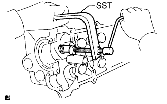
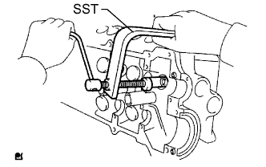
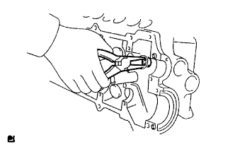
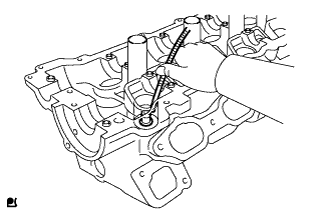
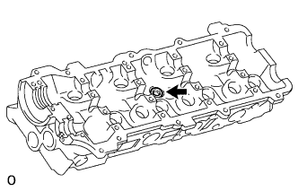

CYLINDER HEAD > DISASSEMBLY |
| 1. REMOVE INTAKE VALVE |
 |
Using SST, compress the compression spring and remove the 2 valve spring retainer locks.
Remove the spring retainer, inner compression spring and valve.
| 2. REMOVE EXHAUST VALVE |
 |
Using SST, compress the compression spring and remove the 2 valve spring retainer locks.
Remove the spring retainer, inner compression spring and valve.
| 3. REMOVE VALVE STEM OIL SEAL |
 |
Using needle nose pliers, remove the stem oil seals.
| 4. REMOVE VALVE SPRING SEAT |
 |
Using compressed air and a magnetic finger, remove the valve spring seat by blowing air onto it.
| 5. REMOVE NO. 1 STRAIGHT SCREW PLUG |
 |
Using a 14 mm hexagon wrench, remove the screw plugs and gasket.
| 6. REMOVE STUD BOLT |